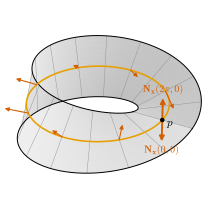
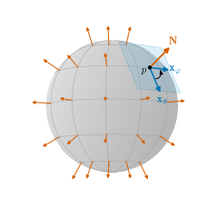

7.5 Orientation of Surfaces
Goals
- unit normal vector와 unit normal field를 정의하고, parametrization이 정하는 unit normal vector \(\mathbf{N} = (\mathbf{x}_u \times \mathbf{x}_v)/\abs{\mathbf{x}_u \times \mathbf{x}_v}\)가 parametrization을 바꾸면 어떻게 변하는지 설명할 수 있다.
- surface의 orientation을 tangent plane의 orientation(Chapter 1)을 연속적으로 고른 것으로 정의하고, 그것이 연속인 unit normal field를 고르는 것, 그리고 change of parameters의 determinant가 양수인 parametrization들로 surface를 덮는 것과 같음을 증명할 수 있다.
- running example의 unit normal vector를 구하고, regular value의 preimage가 orientable임을 보일 수 있다.
- Möbius strip이 regular surface이지만 orientable이 아님을 증명할 수 있다.
Prerequisites
- Definition 1.6.11 (orientation), Proposition 1.6.12, Theorem 1.6.16 (cross product의 성질), Exercise 1.6.7
- Corollary 6.2.5 (normal direction), Theorem 6.3.1, Proposition 6.3.4, Proposition 6.5.4
- cross product 계산: (6.1.5), Example 6.5.7, (6.5.4), (6.5.6), Lemma 7.3.1
- Proposition 3.7.5 (continuous image), Corollary 3.7.6 (intermediate value theorem), Lemma 6.1.6 (angle function)
Motivation
Section 7.4까지 first fundamental form으로 길이, 각, 넓이를 재고 그것을 보존하는 map들을 보았다. 이 장에 남은 주제는 surface의 “앞면과 뒷면”이다. Corollary 6.2.5(b)에서 \(\mathbf{x}_u \times \mathbf{x}_v\)는 tangent plane \(T_pS\)에 수직이고, 두 parametrization의 cross product는 서로 평행했다. 평행하다는 것은 같은 쪽일 수도 반대쪽일 수도 있다는 뜻이다. 곧 각 점에서 길이가 \(1\)인 normal vector는 두 개이고, parametrization 하나가 그 가운데 하나를 고른다. Chapter 6은 이 unit normal vector \(\mathbf{N}\)의 정의를 이 장으로 넘겼다.
Chapter 1에서는 vector space의 orientation을 “두 basis가 같은 쪽으로 도는가”로 정의했고(Definition 1.6.11), \(\R^3\) 안의 평면에서는 수직인 벡터 하나를 고르면 orientation 하나가 정해짐을 보았다(Exercise 1.6.7(b)). surface에서는 tangent plane이 점마다 다르므로, orientation도 점마다 하나씩 골라야 한다. 질문은 “그 선택을 surface 전체에서 연속적으로 할 수 있는가”이다. sphere에서는 늘 바깥쪽을 고르면 된다. 그런데 그렇게 할 수 없는 surface가 있다.
orientation은 뒤의 여러 장에서 필요하다. Chapter 8의 Gauss map은 unit normal vector를 surface 전체에서 고른 것이고, Chapter 10의 전역 Gauss–Bonnet theorem과 Chapter 18의 적분은 oriented surface와 manifold에서 이야기한다.

Unit Normal Vectors and Unit Normal Fields
Definition 7.5.1 (unit normal vector and unit normal field). \(S\)가 regular surface이고 \(p \in S\)라 하자. \(T_pS\)에 수직인 단위벡터를 \(p\)에서 \(S\)의 unit normal vector(단위법벡터)라 한다. parametrization \(\mathbf{x}\colon U \to S\)와 \(q \in U\)에 대하여
를 \(\mathbf{x}\)가 정하는 unit normal vector라 한다. \(O \subseteq S\)가 open set이고 \(\mathbf{N}\colon O \to \R^3\)이 연속이며 모든 \(p \in O\)에서 \(\mathbf{N}(p)\)가 \(p\)에서의 unit normal vector이면, \(\mathbf{N}\)을 \(O\) 위의 unit normal field(단위법벡터장)이라 한다.
Corollary 6.2.5(b)에 의해 \((T_pS)^\perp\)은 \(\mathbf{x}_u \times \mathbf{x}_v \neq 0\)의 상수배 전체인 1-dimensional subspace이므로, \(p\)에서의 unit normal vector는 정확히 두 개 \(\pm\mathbf{N}_{\mathbf{x}}(p)\)이다. \(\mathbf{N}_{\mathbf{x}}\)는 \(\mathbf{x}(U)\) 위의 함수로 잘 정의된다(\(\mathbf{x}\)가 injective). (7.5.1)이 Notation and Conventions의 \(\mathbf{N}\)이다. parametrization 하나만 쓰는 곳에서는 첨자 \(\mathbf{x}\)를 빼고 \(\mathbf{N}\)으로 쓴다. unit normal vector 하나만으로는 정의할 것이 거의 없다. 이 절의 주인공은 unit normal field, 곧 “연속적으로 고른” unit normal vector다.
Example 7.5.2 (unit normal vectors of the running examples). Chapter 6에서 계산한 cross product를 크기로 나누면 된다.
- (a) sphere. Equation (6.1.5)의 \(\mathbf{x}_\theta \times \mathbf{x}_\varphi = r\sin\theta\,\mathbf{x}\), \(\abs{\mathbf{x}_\theta \times \mathbf{x}_\varphi} = r^2\sin\theta\)에서 \(\mathbf{N}_{\mathbf{x}} = \mathbf{x}/r\)이다. 바깥쪽이다. (Exercise 1.6.3에서 미리 해 보았다.)
- (b) cylinder. Example 6.5.7의 \(\mathbf{x}_u \times \mathbf{x}_v = (r\cos u, r\sin u, 0)\)에서 \(\mathbf{N}_{\mathbf{x}} = (\cos u, \sin u, 0)\)이다. 바깥쪽이다.
- (c) torus of revolution. Equation (6.5.4)에서 \(\mathbf{N}_{\mathbf{x}} = -(\cos u\cos v,\ \cos u\sin v,\ \sin u)\)이다. 관의 중심원 쪽, 곧 안쪽이다.
- (d) surface of revolution. Equation (6.5.6)에서 \(\mathbf{N}_{\mathbf{x}} = (-z'\cos v,\ -z'\sin v,\ \rho')/\abs{\alpha'}\)이다(\(\rho \gt 0\)으로 나누었다).
- (e) graph surface. Equation (6.2.2)에서 \(\mathbf{N}_{\mathbf{x}} = (-f_u, -f_v, 1)/\sqrt{1 + f_u^2 + f_v^2}\)이다. 셋째 성분이 양수이므로 위쪽이다.
regular value의 preimage \(S = f^{-1}(a)\)에서는 parametrization 없이 \(\mathbf{N} = \grad f/\abs{\grad f}\)가 \(S\) 전체의 unit normal field이다. \(\grad f\)는 연속이고 \(S\) 위에서 \(0\)이 아니며, Proposition 6.5.4에 의해 \(T_pS\)에 수직이기 때문이다. torus of revolution \(f = (\rho - R)^2 + z^2\)에서는 \(\grad f = 2r(\cos u\cos v, \cos u\sin v, \sin u)\)(Example 6.5.8)이므로 \(\grad f/\abs{\grad f} = -\mathbf{N}_{\mathbf{x}}\), 곧 바깥쪽이다.
Verification: verify/v-7-5-orientation.py
Proposition 7.5.3 (properties of unit normal fields). \(S\)가 regular surface라 하자.
- (a) parametrization \(\mathbf{x}\colon U \to S\)에 대하여 \(\mathbf{N}_{\mathbf{x}}\)는 \(\mathbf{x}(U)\) 위의 unit normal field이고, 세 성분이 \(\mathbf{x}(U)\) 위의 smooth 함수다.
- (b) 두 parametrization \(\mathbf{x}, \mathbf{y}\)의 image가 겹치는 곳 \(W\)에서, change of parameters \(h = \mathbf{x}^{-1} \circ \mathbf{y}\)에 대해
- 이다.
- (c) \(\mathbf{N}\)이 open set \(O\) 위의 unit normal field이고 \(\mathbf{x}(U) \subseteq O\)이며 \(U\)가 연결이면, \(\mathbf{x}(U)\) 전체에서 \(\mathbf{N} = \mathbf{N}_{\mathbf{x}}\)이거나 \(\mathbf{x}(U)\) 전체에서 \(\mathbf{N} = -\mathbf{N}_{\mathbf{x}}\)이다. 특히 모든 unit normal field는 매끄럽다.
- (d) \(S\)가 연결이고 \(\mathbf{N}_1, \mathbf{N}_2\)가 \(S\) 위의 unit normal field이면 \(S\) 전체에서 \(\mathbf{N}_1 = \mathbf{N}_2\)이거나 \(\mathbf{N}_1 = -\mathbf{N}_2\)이다.
Proof idea: 같은 점의 두 unit normal vector의 inner product는 \(\pm 1\)뿐이다. 연속함수가 \(\pm 1\)만 값으로 가지면 연결집합 위에서 상수다(intermediate value theorem). (b)는 Lemma 7.3.1을 크기로 나눈 것이다.
Proof. (a) \(\mathbf{N}_{\mathbf{x}} \circ \mathbf{x} = (\mathbf{x}_u \times \mathbf{x}_v)/\abs{\mathbf{x}_u \times \mathbf{x}_v}\)는 \(U\)에서 매끄럽다. 분모가 양수인 smooth function의 제곱근이기 때문이다. 따라서 세 성분은 \(\mathbf{x}(U)\) 위의 smooth function이고(Definition 6.3.5), 특히 연속이다(Proposition 6.3.6). 값이 unit normal vector인 것은 Theorem 1.6.16(b)이다.
(b) (7.3.1)의 양변을 \(\abs{\mathbf{y}_{\bar u} \times \mathbf{y}_{\bar v}} = \abs{\det Dh}\,\abs{\mathbf{x}_u \times \mathbf{x}_v} \circ h\)로 나누면 된다. \(\det Dh \neq 0\)이다(Theorem 6.3.1).
(c) \(g = \inner{\mathbf{N}}{\mathbf{N}_{\mathbf{x}}}\colon \mathbf{x}(U) \to \R\)는 연속이고, 두 벡터가 같은 점의 unit normal vector이므로 값은 \(1\) 또는 \(-1\)이다. \(U\)가 연결이므로 continuous image \(\mathbf{x}(U)\)도 연결이다(Proposition 3.7.5). \(g\)가 두 값을 모두 가진다면 intermediate value theorem(Corollary 3.7.6)에 의해 \(0\)도 가져야 하므로 모순이다. 따라서 \(g\)는 상수다. smoothness: \(p \in O\) 근처의 parametrization \(\mathbf{x}\)를 잡고 정의역을 \(\mathbf{x}^{-1}(p)\) 중심의 open ball(연결, Example 3.7.10(a))으로 줄이면, 그 image에서 \(\mathbf{N} = \pm\mathbf{N}_{\mathbf{x}}\)이고 (a)에 의해 매끄럽다.
(d) \(\inner{\mathbf{N}_1}{\mathbf{N}_2}\colon S \to \{1, -1\}\)은 연속이므로 (c)와 같은 이유로 상수다.
(b)는 “parametrization을 바꾸면 normal vector가 뒤집힐 수 있다”는 것이다. 예를 들어 \(\mathbf{y}(\bar u, \bar v) = \mathbf{x}(\bar v, \bar u)\)이면 \(h(\bar u, \bar v) = (\bar v, \bar u)\)이고 \(\det Dh = -1\)이므로 \(\mathbf{N}_{\mathbf{y}} = -\mathbf{N}_{\mathbf{x}}\)이다. parametrization 하나로는 normal vector가 정해지지만, surface만으로는 두 선택 가운데 어느 것도 특별하지 않다. 그래서 orientation은 선택이다.
Orientation of a Surface
orientation을 Chapter 1의 말로 정의하자. 각 tangent plane \(T_pS\)는 2-dimensional vector space이므로 orientation이 정확히 두 개 있다(Proposition 1.6.12). surface의 orientation은 그 가운데 하나를 점마다 고르되, 고른 것이 점을 따라 “튀지 않게” 고른 것이다.
Definition 7.5.4 (orientation and orientability of a surface). \(S\)가 regular surface라 하자. 각 \(p \in S\)마다 \(T_pS\)의 orientation \(\mathcal{O}_p\)(Definition 1.6.11)를 하나씩 고른 것 \(\mathcal{O} = (\mathcal{O}_p)_{p \in S}\)가 다음 조건을 만족하면 \(\mathcal{O}\)를 \(S\)의 orientation(방향)이라 한다.
- (연속성) 모든 \(p \in S\)에 대하여 \(p \in \mathbf{x}(U)\)인 parametrization \(\mathbf{x}\)가 있어서, 모든 \(q \in U\)에서 basis \(\big(\mathbf{x}_u(q), \mathbf{x}_v(q)\big)\)가 \(\mathcal{O}_{\mathbf{x}(q)}\)에 속한다.
이런 parametrization을 \(\mathcal{O}\)에 대해 positive parametrization(양의 매개화)라 한다. orientation을 하나 정한 surface를 oriented surface라 하고, orientation이 있는 surface를 orientable(가향) surface, orientation이 없는 surface를 nonorientable surface라 한다.
이 정의가 Chapter 1의 “orientation”과 같은 이름을 가질 자격은 분명하다. 각 점에서 \(\mathcal{O}_p\)는 정확히 Definition 1.6.11의 orientation이다. 새로 더한 것은 연속성 하나다. parametrization의 좌표 basis \((\mathbf{x}_u, \mathbf{x}_v)\)는 점을 따라 연속적으로 변하므로, “근처에서는 한 좌표 basis의 orientation과 같다”는 것이 “튀지 않는다”의 뜻이 된다. Chapter 1의 orientation은 basis 하나를 비교의 기준으로 삼았다. surface에서는 점마다 basis가 달라지므로 비교의 기준을 연속성 조건이 대신한다. surface가 평면이면 두 정의가 일치한다는 것은 Example 7.5.8(d)에서 확인한다. 이제 이 추상적인 정의를 normal vector로 바꾼다.
Theorem 7.5.5 (orientations and unit normal fields). \(S\)가 regular surface라 하자.
- (a) \(\mathcal{O}\)가 \(S\)의 orientation이면 \(S\) 위의 unit normal field \(\mathbf{N}\)이 꼭 하나 있어서, 모든 \(p \in S\)와 \(T_pS\)의 모든 basis \((w_1, w_2)\)에 대하여
- 이다. \(\mathcal{O}\)에 대해 positive parametrization \(\mathbf{x}\)의 image에서는 \(\mathbf{N} = \mathbf{N}_{\mathbf{x}}\)이다.
- (b) 거꾸로 \(\mathbf{N}\)이 \(S\) 위의 unit normal field이면 (7.5.3)은 \(S\)의 orientation \(\mathcal{O}\)를 정한다.
따라서 \(S\)의 orientation과 \(S\) 위의 unit normal field는 (7.5.3)으로 일대일로 대응하고, \(S\)가 orientable일 필요충분조건은 \(S\) 전체에서 정의된 (연속인) unit normal field가 있는 것이다.
이 정리가 말하는 것. surface의 orientation을 고르는 것은 “앞면”을 가리키는 normal vector를 연속적으로 고르는 것과 같다. 둘을 잇는 규칙은 오른손 규칙이다. \(\mathbf{N}\)의 끝에서 내려다볼 때 \(w_1\)에서 \(w_2\)로 반시계 방향으로 돌면 \((w_1, w_2)\)가 positive basis다(Figure 7.5.2).
Proof idea: positive parametrization 둘이 한 점에서 겹치면 좌표 basis 둘이 같은 orientation이므로 \(\det Dh \gt 0\)이고, (7.5.2)에서 두 parametrization의 \(\mathbf{N}_{\mathbf{x}}\)가 같다. 그래서 \(\mathbf{N}\)을 “positive parametrization의 \(\mathbf{N}_{\mathbf{x}}\)”로 정의할 수 있다. 거꾸로는 Proposition 7.5.3(c)로 parametrization의 normal vector를 \(\mathbf{N}\)에 맞춘다.
Proof. 먼저 한 점에서의 linear algebra를 적어 둔다. \(p = \mathbf{x}(q)\)이고 \((w_1, w_2)\)가 \(T_pS\)의 basis, \(B\)가 \((\mathbf{x}_u, \mathbf{x}_v)\)에서 \((w_1, w_2)\)로의 change-of-basis matrix라 하자. \(n\)이 \(T_pS\)에 속하지 않는 벡터이면 \((\mathbf{x}_u, \mathbf{x}_v, n)\)에서 \((w_1, w_2, n)\)으로의 change-of-basis matrix는 왼쪽 위가 \(B\)이고 오른쪽 아래가 \(1\)인 블록행렬이므로
이다(Exercise 1.6.7(b)의 풀이). 또 cross product의 정의((1.6.7))에서 \(\det(\mathbf{x}_u, \mathbf{x}_v, \mathbf{N}_{\mathbf{x}}) = \inner{\mathbf{x}_u \times \mathbf{x}_v}{\mathbf{N}_{\mathbf{x}}} = \abs{\mathbf{x}_u \times \mathbf{x}_v} \gt 0\)이다.
(a) 정의. \(p \in S\)에서 positive parametrization \(\mathbf{x}\)(\(p \in \mathbf{x}(U)\))를 골라 \(\mathbf{N}(p) = \mathbf{N}_{\mathbf{x}}(p)\)로 둔다. 다른 positive parametrization \(\mathbf{y}\)를 골라도 같다. 두 좌표 basis가 모두 \(\mathcal{O}_p\)에 속하므로 그 사이의 change-of-basis matrix \(Dh\)((6.3.5))는 determinant가 양수이고(Definition 1.6.11), (7.5.2)에서 \(\mathbf{N}_{\mathbf{y}}(p) = \mathbf{N}_{\mathbf{x}}(p)\)이기 때문이다. positive parametrization의 image \(\mathbf{x}(U)\)는 \(S\)에서 open set이고 그 위에서 \(\mathbf{N} = \mathbf{N}_{\mathbf{x}}\)는 연속이므로(Proposition 7.5.3(a)) \(\mathbf{N}\)은 unit normal field이다. 규칙 (7.5.3). positive parametrization에서 \((w_1, w_2) \in \mathcal{O}_p\)일 필요충분조건은 \(\det B \gt 0\)이고, (7.5.4)에 \(n = \mathbf{N}_{\mathbf{x}}(p)\)를 넣으면 이것은 \(\det(w_1, w_2, \mathbf{N}(p)) \gt 0\)과 같다. 유일성. \(\mathbf{N}'\)도 (7.5.3)을 만족하면 \(\mathbf{N}'(p) = \pm\mathbf{N}(p)\)이고, \(\mathcal{O}_p\)의 basis 하나에 대해 \(\det(w_1, w_2, \mathbf{N}'(p)) \gt 0\)이므로 부호는 \(+\)다.
(b) 점마다 orientation이다. \(\mathcal{O}_p = \{(w_1, w_2) : T_pS\text{의 basis},\ \det(w_1, w_2, \mathbf{N}(p)) \gt 0\}\)으로 두자. (7.5.4)에서 두 basis의 determinant의 부호는 그 사이의 change-of-basis determinant의 부호만큼 바뀌므로, \(\mathcal{O}_p\)는 Definition 1.6.11의 equivalence class 하나다(Exercise 1.6.7(b)). 연속성. \(p \in S\)에서 정의역이 open ball(연결)인 parametrization \(\mathbf{x}\)를 잡는다. Proposition 7.5.3(c)에서 \(\mathbf{x}(U)\) 위에서 \(\mathbf{N} = \mathbf{N}_{\mathbf{x}}\)이거나 \(\mathbf{N} = -\mathbf{N}_{\mathbf{x}}\)이다. 뒤의 경우에는 변수를 바꾼 \(\tilde{\mathbf{x}}(u, v) = \mathbf{x}(v, u)\)를 쓰면 \(\mathbf{N}_{\tilde{\mathbf{x}}} = -\mathbf{N}_{\mathbf{x}} = \mathbf{N}\)이다((7.5.2)). 어느 경우든 \(\mathbf{N} = \mathbf{N}_{\mathbf{y}}\)인 parametrization \(\mathbf{y}\)가 \(p\) 근처에 있고, 그 모든 점에서 \(\det(\mathbf{y}_u, \mathbf{y}_v, \mathbf{N}) = \abs{\mathbf{y}_u \times \mathbf{y}_v} \gt 0\)이므로 \(\mathbf{y}\)는 positive parametrization이다. 마지막 문장: (a)와 (b)의 두 대응은 모두 (7.5.3)으로 주어지므로 서로의 역이다.

Theorem 7.5.5는 orientation을 또 한 가지 방법으로 말할 수 있게 해 준다. parametrization들이 서로 “같은 쪽”을 가리키도록 맞추는 것이다.
Corollary 7.5.6 (orientation via the determinant of the change of parameters). regular surface \(S\)가 orientable일 필요충분조건은 \(S\)를 덮는 parametrization들의 모임이 있어서, 그 가운데 어느 두 parametrization의 image가 겹치는 곳에서도 change of parameters의 determinant가 양수인 것이다.
Proof. (⇒) orientation \(\mathcal{O}\)를 하나 정하고 positive parametrization 전체를 모으면 정의의 연속성 조건에 의해 \(S\)를 덮는다. 두 positive parametrization이 한 점에서 겹치면 두 좌표 basis가 모두 \(\mathcal{O}_p\)에 속하므로 change-of-basis matrix \(Dh\)(Proposition 6.3.4)의 determinant가 양수다. (⇐) 그런 모임이 있으면 각 \(p\)에서 \(p\)를 덮는 모임 안의 parametrization \(\mathbf{x}\)의 좌표 basis가 속한 orientation을 \(\mathcal{O}_p\)로 둔다. 다른 parametrization \(\mathbf{y}\)를 골라도 \(\det Dh \gt 0\)이므로 같은 orientation이다. 모임 안의 parametrization은 모두 연속성 조건을 만족하므로 \(\mathcal{O}\)는 orientation이다.
Corollary 7.5.7 (a connected orientable surface has two orientations). \(S\)가 연결인 orientable surface이면 \(S\)의 orientation은 정확히 두 개이고, unit normal field로 \(\mathbf{N}\)과 \(-\mathbf{N}\)이다.
Proof. Theorem 7.5.5에 의해 orientation은 unit normal field와 일대일로 대응한다. unit normal field \(\mathbf{N}\)이 하나 있으면 \(-\mathbf{N}\)도 unit normal field이고 \(\mathbf{N} \neq -\mathbf{N}\)이다. Proposition 7.5.3(d)에 의해 다른 것은 없다.
Example 7.5.8 (orientable surface). (a) parametrization 하나로 덮이는 surface. \(S = \mathbf{x}(U)\)이면 \(\mathbf{N}_{\mathbf{x}}\)가 \(S\) 전체의 unit normal field이므로 orientable이다. 평면, graph surface, helicoid(Exercise 7.1.6)가 그렇다.
(b) regular value의 preimage. Example 7.5.2에서 본 대로 \(\grad f/\abs{\grad f}\)가 unit normal field이므로 orientable이다. sphere, cylinder, torus of revolution, ellipsoid, hyperboloid가 모두 orientable이다.
(c) running example의 orientation. sphere와 cylinder는 연결이므로 orientation이 두 개이고, 이 study set은 바깥쪽 \(\mathbf{N}\)을 쓴다. 두 standard parametrization은 이 orientation에 대해 positive parametrization이다(Example 7.5.2(a), (b)). torus of revolution의 standard parametrization이 정하는 \(\mathbf{N}_{\mathbf{x}}\)는 안쪽이다. 따라서 standard parametrization은 바깥쪽 orientation(\(\grad f\))에 대해 음의 parametrization이고, 바깥쪽 orientation의 positive parametrization을 원하면 변수를 바꾸어야 한다(Exercise 7.5.1). Chapter 8에서 torus of revolution의 second fundamental form과 mean curvature를 계산할 때는 standard parametrization의 \(\mathbf{N}_{\mathbf{x}}\)(안쪽)를 쓰고, 그 orientation을 명시한다.
(d) 평면: Chapter 1의 orientation과의 비교. \(W \subseteq \R^3\)이 2-dimensional subspace이고 \(\mathcal{B} = (b_1, b_2)\)가 그 basis라 하자. \(\mathbf{x}(u, v) = ub_1 + vb_2\)는 \(\R^2\)에서 \(W\) 위로 가는 linear isomorphism이므로 \(W\) 전체를 덮는 parametrization이고, 모든 점에서 \((\mathbf{x}_u, \mathbf{x}_v) = (b_1, b_2)\), \(T_pW = W\)이다(Proposition 6.2.4). 따라서 vector space \(W\)의 orientation \([\mathcal{B}]\)(Definition 1.6.11)를 모든 점에 준 것은 surface \(W\)의 orientation이고 \(\mathbf{x}\)는 그 positive parametrization이다. 반대 orientation \([(b_2, b_1)]\)도 같다. \(W\)는 연결이므로(Proposition 3.7.5) surface \(W\)의 orientation은 이 둘뿐이다(Corollary 7.5.7). 곧 평면에서는 surface의 orientation(Definition 7.5.4)과 vector space의 orientation(Definition 1.6.11)이 같은 것이다.
orientation은 전역적인 성질이다. 모든 regular surface는 parametrization의 image \(\mathbf{x}(U)\)로 제한하면 orientable이다((a)). orientable이 아닌 surface가 있다면, 그것은 작은 조각들의 orientation을 이어 붙이는 데서 실패하는 surface이다.
Verification: verify/v-7-5-orientation.py
The Möbius Strip
그런 surface를 만들자. 먼저 regular surface임을 보이고, 그다음 orientable이 아님을 보인다.
Example 7.5.9 (the Möbius strip is a regular surface). \(\mathbf{x}\colon \R \times (-\tfrac12, \tfrac12) \to \R^3\)을
로 정의하고 \(M = \mathbf{x}\big(\R \times (-\tfrac12, \tfrac12)\big)\)를 Möbius strip이라 하자. 점 \(\mathbf{x}(u, v)\)는 단위원 위의 점 \((\cos u, \sin u, 0)\)에서, 반지름 방향 \((\cos u, \sin u, 0)\)과 \(e_3\)이 만드는 평면 안의 단위벡터 \(\cos\tfrac u2\,(\cos u, \sin u, 0) + \sin\tfrac u2\,e_3\) 쪽으로 \(v\)만큼 간 점이다. \(u\)가 한 바퀴(\(2\pi\)) 도는 동안 이 방향은 반 바퀴(\(\pi\)) 돈다. 삼각함수의 덧셈정리에서
이다(\(\cos\tfrac{u + 2\pi}{2} = -\cos\tfrac u2\), \(\sin\tfrac{u + 2\pi}{2} = -\sin\tfrac u2\)). 곧 한 바퀴 돌면 띠의 폭 방향이 뒤집힌다.
- coefficient. \(\rho = 1 + v\cos\tfrac u2\)라 하면 \(\abs{v\cos\tfrac u2} \lt \tfrac12\)이므로 \(\rho \gt \tfrac12\)이다. partial derivative는 \(\mathbf{x}_u = -\tfrac v2\sin\tfrac u2\,(\cos u, \sin u, 0) + \rho\,(-\sin u, \cos u, 0) + \tfrac v2\cos\tfrac u2\,e_3\), \(\mathbf{x}_v = \cos\tfrac u2\,(\cos u, \sin u, 0) + \sin\tfrac u2\,e_3\)이다. 세 벡터 \((\cos u, \sin u, 0)\), \((-\sin u, \cos u, 0)\), \(e_3\)은 orthonormal이므로 \(E = \rho^2 + \tfrac{v^2}{4}\), \(F = -\tfrac v2\sin\tfrac u2\cos\tfrac u2 + \tfrac v2\cos\tfrac u2\sin\tfrac u2 = 0\), \(G = 1\)이다. 따라서 \(\abs{\mathbf{x}_u \times \mathbf{x}_v}^2 = EG - F^2 = \rho^2 + v^2/4 \gt \tfrac14\)이고, \(D\mathbf{x}\)는 모든 점에서 injective이다.
- parametrization. \(a \in \R\)에 대해 \(U_a = (a, a + 2\pi) \times (-\tfrac12, \tfrac12)\)로, \(\Lambda_a = \{(s\cos a, s\sin a, z) : s \ge 0\}\)(닫힌 half-plane)으로, \(V_a = \R^3 \setminus \Lambda_a\)로 두자. \(\mathbf{x}|_{U_a}\)가 \(U_a\)에서 \(M \cap V_a\) 위로 가는 homeomorphism임을 보이자. \(u \in (a, a + 2\pi)\)이고 \(\rho \gt 0\)이므로 \(\mathbf{x}(U_a)\)의 점은 \(\Lambda_a\)에 있지 않다. 거꾸로 \(p = \mathbf{x}(u_0, v_0) \in M \cap V_a\)이면 \(u_0 \notin a + 2\pi\Z\)이고, 정수 \(k\)를 골라 \(u_0 + 2\pi k \in (a, a + 2\pi)\)로 만들면 (7.5.6)을 \(\abs{k}\)번 써서 \(p = \mathbf{x}(u_0 + 2\pi k,\ (-1)^k v_0) \in \mathbf{x}(U_a)\)이다. inverse map은 \(p = (x, y, z)\)에서 \(\rho = \sqrt{x^2 + y^2}\)으로 두고 \(u = \big(e|_{(a, a + 2\pi)}\big)^{-1}(x/\rho, y/\rho)\)(Lemma 6.1.6), \(v = (\rho - 1)\cos\tfrac u2 + z\sin\tfrac u2\)로 주어진다. 실제로 \(p = \mathbf{x}(u, v)\)이면 \(\rho - 1 = v\cos\tfrac u2\), \(z = v\sin\tfrac u2\)이므로 둘째 식이 \(v\)를 돌려준다. 이 식은 \(V_a \cap \{\rho \gt 0\}\)에서 연속이므로 \(\mathbf{x}|_{U_a}\)는 injective이고 inverse map이 연속이다.
\(M = \mathbf{x}(U_0) \cup \mathbf{x}(U_\pi)\)이므로(\(\Lambda_0\)과 \(\Lambda_\pi\)는 \(z\)축에서만 만나고 \(M\)은 \(z\)축과 만나지 않는다) \(M\)은 regular surface이다.
Verification: verify/v-7-5-orientation.py
Proposition 7.5.10 (the Möbius strip is not orientable). Example 7.5.9의 Möbius strip \(M\)에는 unit normal field가 없다. 따라서 \(M\)은 nonorientable surface이다.
Proof idea: unit normal field \(\mathbf{N}\)이 있다면 중심원 \(u \mapsto \mathbf{x}(u, 0)\)을 따라 \(\mathbf{N}\)과 \(\mathbf{x}_u \times \mathbf{x}_v\)의 “같은 쪽인가”를 재는 부호가 연속이다. 그런데 한 바퀴 돌면 \(\mathbf{x}_u \times \mathbf{x}_v\)만 뒤집히므로 부호가 바뀌어야 한다.
Proof. \((u, v) \in \R \times (-\tfrac12, \tfrac12)\)에서 \(\mathbf{n}(u, v) = (\mathbf{x}_u \times \mathbf{x}_v)/\abs{\mathbf{x}_u \times \mathbf{x}_v}\)는 \((u, v)\)의 연속함수다(\(M\) 위의 함수가 아니라 매개변수의 함수로 본다). (7.5.6)의 양변을 \(u\)와 \(v\)로 미분하면(chain rule) \(\mathbf{x}_u(u + 2\pi, v) = \mathbf{x}_u(u, -v)\), \(\mathbf{x}_v(u + 2\pi, v) = -\mathbf{x}_v(u, -v)\)이므로
이다. \(u \in (a, a + 2\pi)\)이면 \(\mathbf{n}(u, v) = \mathbf{N}_{\mathbf{x}|_{U_a}}(\mathbf{x}(u, v))\)이므로 \(\mathbf{n}(u, v)\)는 \(\mathbf{x}(u, v)\)에서 \(M\)의 unit normal vector다.
이제 \(M\) 위의 unit normal field \(\mathbf{N}\)이 있다고 하자. \(c(u) = \mathbf{x}(u, 0)\)이라 하고 \(g(u) = \inner{\mathbf{N}(c(u))}{\mathbf{n}(u, 0)}\)로 두면, \(g\colon \R \to \R\)는 연속함수의 합성과 inner product이므로 연속이고, 두 벡터가 같은 점의 unit normal vector이므로 \(g(u) = \pm 1\)이다. \(\R\)은 연결이므로 intermediate value theorem(Corollary 3.7.6)에 의해 \(g\)는 상수다. 그런데 \(c(u + 2\pi) = c(u)\)((7.5.6)에서 \(v = 0\))이므로 (7.5.7)에서
\[ g(u + 2\pi) = \inner{\mathbf{N}(c(u))}{-\mathbf{n}(u, 0)} = -g(u) \]
이고, 이것은 \(g\)가 상수 \(\pm 1\)이라는 것과 모순이다. 따라서 unit normal field는 없고, Theorem 7.5.5에 의해 \(M\)은 orientable이 아니다. 구체적으로 \(\mathbf{n}(u, 0) = \big(\sin\tfrac u2\cos u,\ \sin\tfrac u2\sin u,\ -\cos\tfrac u2\big)\)이고 \(\mathbf{n}(0, 0) = (0, 0, -1)\), \(\mathbf{n}(2\pi, 0) = (0, 0, 1)\)이다(Figure 7.5.1).
마지막으로 oriented surface 사이의 map이 orientation을 보존하는지 뒤집는지를 정의한다. 이것은 곡선의 reparametrization에서 \(h' \gt 0\)인지(Definition 4.3.2), linear map에서 \(\det \gt 0\)인지(Exercise 1.6.7(a))의 surface 버전이다.
Definition 7.5.11 (orientation-preserving map). \(S_1, S_2\)가 orientation \(\mathcal{O}^1, \mathcal{O}^2\)이 주어진 surface이고 \(\varphi\colon O \to S_2\) (\(O \subseteq S_1\) open set)가 local diffeomorphism이라 하자. 모든 \(p \in O\)에서 \(d\varphi_p\)가 \(\mathcal{O}^1_p\)의 basis를 \(\mathcal{O}^2_{\varphi(p)}\)의 basis로 보내면 \(\varphi\)는 orientation-preserving map(방향을 보존하는 사상)이라 하고, 늘 반대 orientation의 basis로 보내면 orientation을 뒤집는다고 한다.
unit normal field \(\mathbf{N}_1, \mathbf{N}_2\)로 말하면, (7.5.3)에서 \(\varphi\)가 orientation을 보존할 필요충분조건은 \(T_pS_1\)의 한 basis \((w_1, w_2)\)에 대해 \(\det(d\varphi_p w_1, d\varphi_p w_2, \mathbf{N}_2(\varphi(p)))\)와 \(\det(w_1, w_2, \mathbf{N}_1(p))\)의 부호가 모든 \(p\)에서 같은 것이다((7.5.4)에 의해 basis의 선택에 무관하다).
Example 7.5.12 (reflection, antipodal map, and rotation of a sphere). \(S^2(r)\)에 바깥쪽 orientation \(\mathbf{N}(p) = p/r\)을 준다.
(a) 반사 \(\sigma_z(x, y, z) = (x, y, -z)\). (6.4.4)에서 \(q = (\theta, \varphi)\), \(\hat q = (\pi - \theta, \varphi)\)이면 \(d\sigma_z(\mathbf{x}_\theta(q)) = -\mathbf{x}_\theta(\hat q)\), \(d\sigma_z(\mathbf{x}_\varphi(q)) = \mathbf{x}_\varphi(\hat q)\)이다. \((\mathbf{x}_\theta(q), \mathbf{x}_\varphi(q))\)는 양의 basis이고, 옮겨진 basis는
\[ \det\big(-\mathbf{x}_\theta(\hat q),\ \mathbf{x}_\varphi(\hat q),\ \mathbf{N}(\mathbf{x}(\hat q))\big) = -\abs{\mathbf{x}_\theta \times \mathbf{x}_\varphi}(\hat q) = -r^2\sin\theta \lt 0 \]
이므로 negative basis다. 곧 \(\sigma_z\)는 orientation을 뒤집는다. Example 6.4.7에서 coordinate representation의 determinant가 \(-1\)이었던 것이 이 뜻이다.
(b) antipodal map \(A(p) = -p\). \(dA_p(w) = -w\)이고(Example 6.4.6) \(\mathbf{N}(-p) = -\mathbf{N}(p)\)이므로 \(\det(-w_1, -w_2, \mathbf{N}(-p)) = -\det(w_1, w_2, \mathbf{N}(p))\)이다. orientation을 뒤집는다. Exercise 6.4.5에서 \(dA_p = -\id\)는 평면 \(T_pS^2 = T_{-p}S^2\)의 linear map으로서 determinant가 \(+1\)이었다. 그런데 이 평면에 \(p\)와 \(-p\)에서 주는 orientation은 normal vector가 반대이므로 서로 반대다. 그래서 \(A\)는 surface의 orientation을 뒤집는다.
(c) 회전. determinant가 \(1\)인 orthogonal matrix \(J\)는 \(J(S^2(r)) = S^2(r)\)이고 \(\mathbf{N}(Jp) = J\mathbf{N}(p)\)이므로 \(\det(Jw_1, Jw_2, J\mathbf{N}(p)) = \det J\,\det(w_1, w_2, \mathbf{N}(p))\)와 부호가 같다. orientation을 보존한다.
Verification: verify/v-7-5-orientation.py
Summary
- 각 점의 unit normal vector는 두 개 \(\pm\mathbf{N}\)이다. parametrization은 \(\mathbf{N}_{\mathbf{x}} = (\mathbf{x}_u \times \mathbf{x}_v)/\abs{\mathbf{x}_u \times \mathbf{x}_v}\)를 고르고, parametrization을 바꾸면 \(\mathbf{N}_{\mathbf{y}} = \sgn(\det Dh)\,\mathbf{N}_{\mathbf{x}}\)이다.
- surface의 orientation은 tangent plane의 orientation(Chapter 1)을 연속적으로 고른 것이다. orientation과 unit normal field는 “\((w_1, w_2)\)가 양의 basis \(\iff \det(w_1, w_2, \mathbf{N}) \gt 0\)”으로 일대일 대응하고, change of parameters의 determinant가 양수인 parametrization들로 덮는 것과도 같다.
- unit normal field는 연속이기만 하면 매끄럽고, 연결인 orientable surface의 orientation은 정확히 두 개다(\(\mathbf{N}\), \(-\mathbf{N}\)).
- parametrization 하나로 덮이는 surface와 regular value의 preimage는 orientable이다. sphere·cylinder는 바깥쪽 \(\mathbf{N}\)을 쓰고, torus of revolution의 standard parametrization은 안쪽 \(\mathbf{N}_{\mathbf{x}}\)를 준다.
- Möbius strip은 regular surface이지만 중심원을 한 바퀴 돌면 normal vector가 뒤집히므로 orientable이 아니다. 반사와 antipodal map은 sphere의 orientation을 뒤집고 회전은 보존한다.
다음 장에서는 oriented surface의 unit normal field \(\mathbf{N}\)을 surface에서 unit sphere로 가는 map, 곧 Gauss map으로 보고, 그 미분 \(d\mathbf{N}_p\)로 surface가 한 점에서 어느 방향으로 얼마나 휘는지를 잰다(Chapter 8).
Exercises
Exercise 7.5.1 ★ torus of revolution에 바깥쪽 orientation(\(\grad f/\abs{\grad f}\))을 주자. standard parametrization \(\mathbf{x}\)의 변수를 바꾼 \(\mathbf{y}(u, v) = \mathbf{x}(v, u)\)가 이 orientation에 대해 positive parametrization임을 보이고, \(\mathbf{N}_{\mathbf{y}}\)를 구하여라.
Solution
\(h(u, v) = (v, u)\)는 \(\det Dh = -1\)이므로 (7.5.2)에서 \(\mathbf{N}_{\mathbf{y}}(\mathbf{y}(u, v)) = -\mathbf{N}_{\mathbf{x}}(\mathbf{x}(v, u)) = (\cos v\cos u,\ \cos v\sin u,\ \sin v)\)이다(Example 7.5.2(c)). 이것은 바깥쪽, 곧 \(\grad f/\abs{\grad f}\)이다. \(\det(\mathbf{y}_u, \mathbf{y}_v, \mathbf{N}_{\mathbf{y}}) = \abs{\mathbf{y}_u \times \mathbf{y}_v} \gt 0\)이므로 Theorem 7.5.5(a)에 의해 \(\mathbf{y}\)는 positive parametrization이다. 직접 계산하면 \(\mathbf{y}_u \times \mathbf{y}_v = r(R + r\cos v)(\cos v\cos u,\ \cos v\sin u,\ \sin v)\)이다. (\(\mathbf{y}\)에서는 \(u\)가 경도, \(v\)가 관의 각이다. 같은 surface, 같은 점에서 변수의 순서만 바꾸면 normal vector가 뒤집힌다.)
Verification: verify/v-7-5-orientation.py
Exercise 7.5.2 ★ 참인지 거짓인지 판별하고 이유를 대어라. (a) parametrization 하나로 덮이는 surface는 orientable이다. (b) 모든 orientable surface의 orientation은 정확히 두 개다. (c) 한 점 \(p\)를 덮는 두 parametrization \(\mathbf{x}, \mathbf{y}\)에 대해 \(\mathbf{N}_{\mathbf{x}}(p) = \mathbf{N}_{\mathbf{y}}(p)\)이다. (d) orientable surface의 열린 부분집합은 orientable이다.
Solution
(a) 참. Example 7.5.8(a).
(b) 거짓. 연결이 아니면 더 많다. 두 겹 hyperboloid는 orientation이 네 개다(Exercise 7.5.3). 연결이면 참이다(Corollary 7.5.7).
(c) 거짓. (7.5.2)에서 \(\det Dh \lt 0\)이면 \(\mathbf{N}_{\mathbf{y}}(p) = -\mathbf{N}_{\mathbf{x}}(p)\)이다. 예: 변수를 바꾼 parametrization.
(d) 참. \(S\) 위의 unit normal field를 열린 부분집합 \(O\)로 제한하면 \(O\) 위의 unit normal field이다(\(T_pO = T_pS\), Exercise 6.2.3(b)).
Exercise 7.5.3 ★ 두 겹 hyperboloid \(S = \{-x^2 - y^2 + z^2 = 1\}\)의 orientation은 정확히 네 개임을 보여라. 위쪽 판에서 그래프 parametrization \((u, v, \sqrt{1 + u^2 + v^2})\)가 정하는 \(\mathbf{N}\)은 \(\grad f/\abs{\grad f}\)와 같은 쪽인가?
Solution
\(S\)는 두 조각 \(S_+ = S \cap \{z \gt 0\}\), \(S_- = S \cap \{z \lt 0\}\)으로 나뉘고(Example 6.5.5(c)), 각 조각은 \(\R^2\) 위의 연속함수 \(\pm\sqrt{1 + u^2 + v^2}\)의 그래프이므로 \(\R^2\)와 homeomorphic이고 연결이다. 두 조각은 \(S\)에서 열려 있다. \(S\) 위의 unit normal field \(\mathbf{N}\)을 각 조각으로 제한하면 그 조각의 unit normal field이고, 거꾸로 두 조각의 unit normal field를 하나씩 고르면 \(S\) 위의 unit normal field가 된다(두 조각이 서로소인 open set이므로 연속). 각 조각에서의 선택은 두 개(Corollary 7.5.7)이므로 모두 \(2 \times 2 = 4\)개다. \(f = -x^2 - y^2 + z^2\)이면 \(\grad f = (-2x, -2y, 2z)\)이다. 위쪽 판의 그래프 parametrization에서 \(\mathbf{x}_u \times \mathbf{x}_v = (-u/w, -v/w, 1)\) (\(w = \sqrt{1 + u^2 + v^2}\))이고 \(\grad f = (-2u, -2v, 2w)\)이므로 inner product는 \(2(u^2 + v^2 + w^2)/w \gt 0\)이다. 같은 쪽이다.
Verification: verify/v-7-5-orientation.py
Exercise 7.5.4 ★ cylinder \(C_r\)에 바깥쪽 orientation을 준다. 반사 \(\sigma_z(x, y, z) = (x, y, -z)\)와 \(z\)축 둘레의 반 바퀴 회전 \(J(x, y, z) = (-x, -y, z)\)는 각각 \(C_r\)의 orientation을 보존하는가, 뒤집는가?
Solution
standard parametrization은 positive parametrization이다(Example 7.5.8(c)). 바깥쪽 normal vector \(\mathbf{N}(x, y, z) = (x, y, 0)/r\)은 \(z\)에 무관하므로 \(\mathbf{N}(\sigma_z p) = \mathbf{N}(p) = \sigma_z\mathbf{N}(p)\)이고, \(\mathbf{N}(Jp) = J\mathbf{N}(p)\)이다. 두 map은 linear이므로 미분이 자기 자신이고(Example 6.4.6), 따라서 \(L = \sigma_z\) 또는 \(J\)에 대해 \(\det(Lw_1, Lw_2, \mathbf{N}(Lp)) = \det(Lw_1, Lw_2, L\mathbf{N}(p)) = \det L\,\det(w_1, w_2, \mathbf{N}(p))\)이다. \(\det\sigma_z = -1\)이므로 \(\sigma_z\)는 orientation을 뒤집고, \(\det J = 1\)이므로 \(J\)는 보존한다. standard parametrization으로 확인하면 \(\det(\sigma_z\mathbf{x}_u, \sigma_z\mathbf{x}_v, \mathbf{N}) = -r\), \(\det(J\mathbf{x}_u, J\mathbf{x}_v, J\mathbf{N}) = r\)이다.
Verification: verify/v-7-5-orientation.py
Exercise 7.5.5 ★★ unit sphere에 바깥쪽 orientation을 줄 때, stereographic projection의 inverse map \(\sigma^{-1}(u, v) = (2u, 2v, u^2 + v^2 - 1)/(u^2 + v^2 + 1)\)(Example 7.4.9)은 positive parametrization인가? 남극에서의 stereographic projection의 inverse map \(\tilde\sigma^{-1}(u, v) = (2u, 2v, 1 - u^2 - v^2)/(u^2 + v^2 + 1)\)은 어떤가?
Hint
\(\sigma^{-1}\)은 isothermal parametrization이므로 \(\abs{\sigma^{-1}_u \times \sigma^{-1}_v} = E = 4/w^2\)이다. cross product가 \(\pm\sigma^{-1}(u, v)\)에 비례함을 보이고 부호를 한 점에서 정한다.
Solution
cross product는 \(T_pS^2 = p^\perp\)에 수직이므로 \(p = \sigma^{-1}(u, v)\)에 평행하고((6.2.3)), 크기는 (7.4.3)에서 \(\sqrt{EG - F^2} = 4/w^2\)(\(w = 1 + u^2 + v^2\))이다. 따라서 \(\sigma^{-1}_u \times \sigma^{-1}_v = \varepsilon(u, v)\,(4/w^2)\,\sigma^{-1}(u, v)\), \(\varepsilon = \pm 1\)이다. \(\varepsilon\)은 연속이고 \(\R^2\)는 연결이므로 상수이며(intermediate value theorem), 원점에서 정한다. \((u, v) = (0, 0)\)이면 \(\sigma^{-1}_u = (2, 0, 0)\), \(\sigma^{-1}_v = (0, 2, 0)\)이므로 cross product는 \((0, 0, 4)\)이고 \(\sigma^{-1}(0, 0) = (0, 0, -1)\)이다. 곧 \(\varepsilon = -1\)이다. \(\mathbf{N}_{\sigma^{-1}} = -\sigma^{-1}(u, v)\)는 안쪽이므로 \(\sigma^{-1}\)은 바깥쪽 orientation에 대해 음의 parametrization이다. 같은 계산에서 \(\tilde\sigma^{-1}\)은 원점에서 cross product가 \((0, 0, 4)\)이고 점이 북극 \((0, 0, 1)\)이므로 \(\varepsilon = +1\), 곧 positive parametrization이다. (두 parametrization의 겹침 \(\{(u, v) \neq 0\}\)에서 change of parameters \(u/\abs{u}^2\)(Chapter 11)의 Jacobian determinant는 \(-1/\abs{u}^4 \lt 0\)이다. (7.5.2)와 맞는다.)
Verification: verify/v-7-5-orientation.py
Exercise 7.5.6 ★★ Möbius strip에서 중심원을 뺀 \(M^* = M \setminus \{\mathbf{x}(u, 0) : u \in \R\}\)은 연결이고 orientable임을 보여라. Möbius strip을 가운데를 따라 자르면 한 조각의 띠가 된다는 사실과 비교하여라.
Hint
\(M^* = \mathbf{x}\big(\R \times (0, \tfrac12)\big)\)임을 (7.5.6)으로 보이고, \(\mathbf{n}(u + 4\pi, v) = \mathbf{n}(u, v)\)를 쓴다.
Solution
모양. \(M^*\)의 점은 \(\mathbf{x}(u, v)\), \(v \neq 0\)이고, \(v \lt 0\)이면 (7.5.6)에서 \(\mathbf{x}(u, v) = \mathbf{x}(u + 2\pi, -v)\)이므로 \(M^* = \mathbf{x}(\R \times (0, \tfrac12))\)이다. 연결인 \(\R \times (0, \tfrac12)\)의 continuous image이므로 연결이다(Proposition 3.7.5). \(M^*\)는 \(M\)에서 closed set(중심원의 trace, compact)을 뺀 open set이므로 regular surface이다.
orientable. (7.5.6)을 두 번 쓰면 \(\mathbf{x}(u + 4\pi, v) = \mathbf{x}(u, v)\)이고, (7.5.7)을 두 번 쓰면 \(\mathbf{n}(u + 4\pi, v) = -\mathbf{n}(u + 2\pi, -v) = \mathbf{n}(u, v)\)이다. \(v, v' \gt 0\)이고 \(\mathbf{x}(u, v) = \mathbf{x}(u', v')\)이면 Example 7.5.9의 inverse map 공식에서 \(u' - u \in 2\pi\Z\)이고, 홀수 배이면 \(v' = -v \lt 0\)이 되므로 \(u' - u \in 4\pi\Z\), \(v' = v\)이다. 따라서 \(\mathbf{N}(\mathbf{x}(u, v)) = \mathbf{n}(u, v)\) (\(v \gt 0\))는 \(M^*\) 위에서 잘 정의된다. 각 점 근처에서 \(\mathbf{N}\)은 parametrization \(\mathbf{x}|_{(a, a + 2\pi) \times (0, 1/2)}\)의 \(\mathbf{N}_{\mathbf{x}}\)와 같으므로 연속이고, unit normal field이다. Theorem 7.5.5에 의해 \(M^*\)는 orientable이다. \(\mathbf{x}\)는 \(\R \times (0, \tfrac12)\)에서 주기 \(4\pi\)이므로, \(M^*\)는 길이가 두 배인 띠 \(\mathbf{x}\big((0, 4\pi) \times (0, \tfrac12)\big)\)에 선분 하나를 더한 것이다. 가운데를 따라 자른 Möbius strip이 두 바퀴 감긴 한 조각의 띠가 되는 이유가 이것이다.
Verification: verify/v-7-5-orientation.py
Exercise 7.5.7 ★★★ \(S\)가 orientation이 주어진 연결 surface이고 \(\varphi\colon S \to S\)가 diffeomorphism이면, \(\varphi\)는 orientation을 보존하거나 뒤집는다(점마다 섞이지 않는다)는 것을 보여라. torus of revolution \(T_{R,r}\)에 바깥쪽 orientation을 줄 때 반사 \(\sigma_z(x, y, z) = (x, y, -z)\)와 반 바퀴 회전 \((x, y, z) \mapsto (-x, -y, z)\)는 각각 어느 쪽인가? [dC §2-6 Exercise 5, modified]
Hint
\(\varepsilon(p) = \sgn\det\big(d\varphi_p w_1, d\varphi_p w_2, \mathbf{N}(\varphi(p))\big)\)(\((w_1, w_2)\)는 \(\mathcal{O}_p\)의 basis)가 locally constant임을 보인다. torus of revolution의 standard parametrization은 바깥쪽 orientation에 대해 negative parametrization이라는 것을 잊지 않는다.
Solution
locally constant. (7.5.4)에 의해 \(\varepsilon(p)\)는 양의 basis의 선택에 무관하다. \(p\) 근처의 positive parametrization \(\mathbf{x}\)를 잡고 \(w_1 = \mathbf{x}_u\), \(w_2 = \mathbf{x}_v\)로 두면 \(\varepsilon(\mathbf{x}(q)) = \sgn\det\big(d\varphi(\mathbf{x}_u), d\varphi(\mathbf{x}_v), \mathbf{N}(\varphi(\mathbf{x}(q)))\big)\)이다. \(d\varphi(\mathbf{x}_u) = (\varphi \circ \mathbf{x})_u\)(Theorem 7.2.7(a))와 \(\mathbf{N} \circ \varphi \circ \mathbf{x}\)는 \(q\)의 연속함수이고, determinant는 \(0\)이 아니다(\(d\varphi\)가 isomorphism이고 \(\mathbf{N}\)은 tangent plane 밖에 있다). 따라서 determinant는 \(q\)의 연속함수로서 \(0\)을 지나지 않으므로 \(\mathbf{x}\)의 정의역을 연결로 잡으면 부호가 일정하다(intermediate value theorem). 곧 \(\varepsilon\)은 locally constant이고, \(S\)가 연결이므로 상수다(Proposition 3.7.16). \(\varepsilon \equiv 1\)이면 보존, \(\varepsilon \equiv -1\)이면 뒤집는다.
torus of revolution. 바깥쪽 normal vector는 \(\mathbf{N}_{\text{out}} = (\cos u\cos v, \cos u\sin v, \sin u)\)이고 standard parametrization은 음의 parametrization이므로, standard parametrization의 basis에 대해 \(\det(\mathbf{x}_u, \mathbf{x}_v, \mathbf{N}_{\text{out}}) = -r(R + r\cos u) \lt 0\)이다. \(\sigma_z(\mathbf{x}(u, v)) = \mathbf{x}(-u, v)\)이고 \(\mathbf{N}_{\text{out}}(\sigma_z p) = \sigma_z\mathbf{N}_{\text{out}}(p)\)이므로 옮겨진 basis의 determinant는 \(\det\sigma_z \cdot (-r(R + r\cos u)) = r(R + r\cos u) \gt 0\)이다. 원래 basis가 음이었고 옮겨진 basis가 양이므로 \(\sigma_z\)는 orientation을 뒤집는다. 반 바퀴 회전은 determinant가 \(1\)이고 \(\mathbf{N}_{\text{out}}\)을 같은 회전으로 옮기므로 옮겨진 basis의 determinant도 \(-r(R + r\cos u) \lt 0\)이다. 음의 basis가 음의 basis로 가므로 orientation을 보존한다. (standard parametrization이 negative parametrization이라는 것을 잊고 옮겨진 basis의 부호만 보면 결론이 거꾸로 나온다. orientation을 비교할 때는 늘 원래 basis의 부호와 옮겨진 basis의 부호를 함께 본다.)
Verification: verify/v-7-5-orientation.py